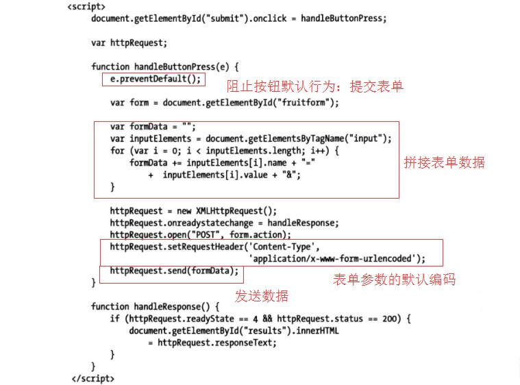

Ajax
Ajax是现代Web应用程序开发的一项关键工具。它让你能想服务器异步发送和接收数据，然后用JavaScript解析。
Ajax是异步JavaScript和XML的缩写，这个名称诞生于XML还是数据传输首选格式的时期，但现在基本不用XML传输数据了。
Ajax核心规范的名称继承于你用来建立和发起请求的JavaScript对象：XMLHttpRequest。这个规范有两个等级。所有浏览器都实现了第一级（Level1）。它代表了基础级别的功能。第二级别（Level2）扩展了最初的规范，纳入了额外的事件和一些功能来让它更容易与form元素协作，并且支持一些相关的规范（例如CORS）。
Ajax起步
Ajax的关键在于XMLHttpRequest对象，而理解这个对象的最佳方式就是看个例子。
- 处理响应
一旦脚本调用了send方法，浏览器会在后台发送请求到服务器。因为请求实在后台处理的，所有Ajax依靠readystatechange事件来通知你这个请求的进展情况。当readystatechange事件被触发后，浏览器会把一个Event对象传递给指定的处理函数。Event对象的target属性会被设定为与此事件关联的XMLHttpRequest。
可以读取XMLHttpRequest.readyState属性的值确定当前请求到了哪个阶段。下面是这个属性的值
值 数值 说明 UNSENT 0 已创建XMLHttpRequest对象 OPENED 1 已调用open方法 HEADERS_RECEIVED 2 已收到服务器响应的标头 LOADING 3 已收到服务器响应 DONE 4 响应完成或已失败
DONE状态并不意味着请求成功，它只代表请求已完成。可以通过status属性获得HTTP状态码，它会返回一个数值（比如200表示成功）。只有结合readyState和status属性的值才能够确定某个请求的结果。
responseText属性会返回一个字符串，代表从服务器上取回的数据 - 主流中的异类：应对Opera
Opera浏览器的XMLHttpRequest标准实现得不太一样。
第一个问题是readystatechange事件不会返回一个Event对象，这意味着要把XMLHttpRequest对象指派给一个全局变量。
第二个问题是Opera没有在XMLHttpRequest对象上定义就绪状态的常量，这意味着XMLHttpRequest.readyState==XMLHttpRequest.DONE要修改为XMLHttpRequest.readyState==4
使用Ajax事件
现在，我们来详细地看看XMLHttpRequest对象支持的功能以及如何在你的请求中使用它们。
| 名称 | 说明 | 事件类型 |
|---|---|---|
| abort | 在请求被中止时触发 | ProgressEvent |
| error | 在请求失败时触发 | ProgressEvent |
| load | 在请求成功完成时触发 | ProgressEvent |
| loadend | 在请求完成时触发，不管成功还是失败 | ProgressEvent |
| loadstart | 在请求开始时触发 | ProgressEvent |
| progress | 触发以提示请求的进度 | ProgressEvent |
| readystatechange | 在请求生命周期的不同阶段触发 | Event |
| timeout | 如果请求超时时则触发 | ProgressEvent |
这些事件大多数会在请求的某一个特定点上触发。readystatechange和progress这两个事件是例外，它们可以多次触发以提供进度更新。
除了readystatechange（XMLHttpRequest规范Level 1）之外，表中展示的其他事件都定义于XMLHttpRequest规范Level 2。
调用这些事件时，浏览器会对readystatechange事件使用常规的Event对象，对其他事件则使用ProgressEvent对象。ProgressEvent对象定义了Event对象的所有成员，并增加了一些成员。
| 名称 | 说明 | 返回值 |
|---|---|---|
| lengthComputable | 如果能够计算数据流的总长度则返回true | 布尔值 |
| loaded | 返回当前已载入的数据量 | 数值 |
| total | 返回可用的数据总量 | 数值 |
下面是使用这些事件的一个综合例子：
处理错误
使用Ajax时必须留心两类错误。它们之间的区别源于视角不同。
第一类错误是从XMLHttpRequest对象的角度看到的问题：某些因素阻止了请求发送到服务器，例如DNS无法解析主机名或者URL无效等。
第二类问题是从应用程序的角度看到的问题。它们发生于请求成功发送到服务器，服务器接收请求，进行处理并生成相应，但该响应不是你期望的内容。例如请求的URL不存在等。
- 处理设置错误
使用try…catch语句来围住请求的代码。在catch子句对错误进行处理 - 处理应用程序错误
这种错误发生于请求成功完成（从XMLHttpRequest对象角度看），但没有返回你想要的数据时，可以根据status属性来确定发生了什么。200表示请求成功完成。12345if(e.target.status==200){target.innerHTML = e.target.responseText;}else{console.error("Status:"+e.target.status+","+e.target.statusText);}
获取和设置标头
XMLHTTPRequest对象让你可以设置发送给服务器的请求标头（Header）和读取服务器响应里的标头。通常不需要添加或修改Ajax请求里的标头。浏览器知道需要发送什么，服务器也知道如何进行响应。不过，有几种情况是例外。
下面是有关标头的方法：
| 方法 | 说明 | 返回 |
|---|---|---|
| setRequestHeader(header,value) | 用指定值设置标头 | void |
| getResponseHeader(header) | 获取指定标头的值 | 字符串 |
| getAllResponseHeaders() | 以单个字符串的形式获取所有的标头 | 字符串 |
覆盖请求的HTTP方法
HTTP发送请求的方法除了GET和POST之外，还存在一些其他方法（比如PUT、DELETE）这些方法用来向服务器请求的URL赋予意义，而且这种用法正在呈现上升趋势。例如，如果想删除数据，可以这么写：1httpRequest.open("DELETE","http://myserver/records/person/1");此处的关键在于通过HTTP方法表达出你想让服务器做什么，而不是把它用某种方式编码进URL。这是一种被称为RESTful API的趋势的一部分。
以这种方式使用HTTP方法的问题在于：许多主流浏览器只支持GET和POST。而且不少防火墙只允许GET和POST请求通过。有一种惯用的做法可以规避这个限制，就是使用X-HTTP-Method-Override标头来指定想要使用的HTTP方法，但形式上是再发送一个POST请求(两个请求，第一个是OPTIONS请求，第二个是POST请求)。下面是示例代码:12345678function handleButtonPress(e){var httpRequest = new XMLHttpRequest();httpRequest.onreadystatechange = handleResponse;httpRequest.open("GET",e.target.innerHTML+".html");//注意：一定要在open方法之后设置，否则会报错httpRequest.setRequestHeader("X-HTTP-Method-Override","DELETE");httpRequest.send();}注意：覆盖HTTP方法需要服务器端的Web应用程序框架能理解X-HTTP-Method-Override这个惯例，且能理解和支持那些用得较少的HTTP方法。对于Servlet，为支持X-HTTP-Method-Override，需要给响应添加一个标头
resp.setHeader("Access-Control-Allow-Headers", "X-HTTP-Method-Override");以及重写doOptions方法禁用内容缓存
第二个可以添加到Ajax请求上的有用标头是Cache-Control。一些浏览器会缓存通过Ajax请求所获得的内容，导致若请求的内容发生改变时，不能立刻反映到页面上。可以设置Cache-Control标头让浏览器不缓存Ajax请求获取的内容。例如：12345678function handleButtonPress(){var httpRequest = new XMLHttpRequest();httpRequest.onreadystatechange = handleResponse;httpRequest.open("GET",e.target.innerHTML+".html");//注意：一定要在open方法之后设置，否则会报错httpRequest.setRequestHeader("Cache-Control","no-cache");httpRequest.send();}获取响应标头
可以通过getResponseHeader和getAllResponseHeaders方法来读取服务器响应某个Ajax请求时发送的HTTP标头。大多数情况下，不需要关心标头里有什么，因为它们是浏览器和服务器之间交互事务的组成部分。下面是例子：12345678function handleResponse(){if(httpRequest.readyState == 2){console.log(httpRequest.getAllResponseHeaders);console.log(httpRequest.getResponseHeader("Content-Type"));}else if(httpRequest.readyState == 4 && httpRequest.status == 200){//成功完成响应的处理}}响应标头在readyState变成HEADERS_RECEIVED(值为2)时就可以使用了。标头是服务器在响应时首先发送回来的消息，因此可以在内容本身就绪前先读取它们。
生成跨源Ajax请求
默认情况下，浏览器限制脚本在它们所属文档的来源内生成Ajax请求，来源由URL中的协议、主机名和端口号组成。从一个来源到另一个来源的Ajax请求被称为跨源请求。浏览器不支持Ajax请求跨源的目的是降低跨站脚本攻击（Cross-site scripting，简称CSS）的风险。
为实现跨源请求，服务器返回浏览器的响应信息添加一个标头（这里以Java的Servlet示例）：
使用Origin请求标头
作为CORS的一部分，浏览器会给请求添加一个Origin标头以注明当前文档的来源。可以通过它更灵活地设置Access-Control-Allow-Origin的值：12345678String origin = req.getHeader("Origin");//如果是来源包含127.0.0.1if(origin.indexOf("127.0.0.1")>-1){//允许跨源请求resp.setHeader("Access-Control-Allow-Origin", origin);}//支持X-HTTP-Method-Override请求头resp.setHeader("Access-Control-Allow-Headers", "X-HTTP-Method-Override");高级CORS功能
中止请求
XMLHttpRequest对象定义了一个让你可以中止请求的方法。如下表：
| 成员 | 说明 | 返回 |
|---|---|---|
| abort() | 中断当前请求 | void |
注意，当调用abort()方法时会触发XMLHttpRequest的onabort事件，可以在onabort事件里进行一些中断请求后的处理。
发送表单数据
Ajax最常见的一大用途是向服务器发送数据。最典型的情况是从客户端发送表单数据

表单编码
Content-Type指定向服务器发送的数据格式，等价于表单元素的enctype属性。
application/x-www-form-urlencoded格式编码
application/x-www-form-urlencoded是表单编码的默认格式。但由于不是Ajax编码的默认格式，所以需要手动指定。例如，下面有个表单：123456<!--这是默认编码，可省略--><form method='post' enctype='application/x-www-form-urlencoded'><input type="text" name='title'><input type="text" name='subtitle'><input type="submit"></form>提交表单之后，通过控制台可以查看到下面信息：
请求头（这里只给出了Content-Type字段）：12POST http://www.example.com HTTP/1.1Content-Type: application/x-www-form-urlencoded请求体：
1title=test&subtitle=%E4%B8%AD%E5%9B%BD这里你看到的
%E4%B8%AD%E5%9B%BD即是中国按照base64编码（url通用的编码方式）后的结果。可以在Chrome Console中通过decodeURI('%E4%B8%AD%E5%9B%BD')来解码。
由此可见，application/x-www-form-urlencoded编码的格式就是参数使用&符号连接，发送前对字符进行编码，空格会转换成”+”加号。- multipart编码
multipart编码方式则需要设置enctype为multipart/form-data。当表单需要上传附件时，必须设置该编码。 - text/plain编码
除了application/x-www-form-urlencoded和multipart/form-data，HTML的<form>还支持text/plain。这种编码方式需要谨慎使用，Chrome使用与application/x-www-form-urlencoded一样的编码方案，而Firefox又不一样。
使用FormData对象发送表单数据
另一种更简洁的表单数据收集方式是使用一个FormData对象，它是在XMLHttpRequest第二级规范中定义的。
创建FormData对象
创建FormData对象可以传递一个HTMLFormElement对象，这样表单里的所有元素的值都会被自动收集起来。下面是综合例子：1234567891011121314151617181920212223242526272829303132<html><head><meta charset="UTF-8"><title></title></head><body><form action="" method="post" id="myForm">用户名：<input type="text" name="username" id="username" />密码：<input type="text" name="password" /><input type="submit" id="submitBtn" value="提交"/></form><script type="text/javascript">var httpRequest;document.getElementById("submitBtn").addEventListener('click',function(e){e.preventDefault();var form = document.getElementById("myForm");//FormData对象默认的编码方式multipart/form-data;var formData = new FormData(form);//还能添加参数formData.append("参数1","谁看见啊");httpRequest = new XMLHttpRequest();httpRequest.onreadystatechange = handleResponse;httpRequest.open('POST',form.action);httpRequest.send(formData);});function handleResponse(){console.log(httpRequest.readyState);}</script></body></html>发送JSON数据
Ajax不止用来发送表单数据，几乎可以发送任何东西，运用最多的是JSON数据，下面是综合例子：12345678910111213141516171819202122232425262728293031323334<html><head><meta charset="UTF-8"><title></title></head><body><form action="" method="post" id="myForm">用户名：<input type="text" name="username" id="username" />密码：<input type="text" name="password" /><button id="submitBtn" type="submit">提交</button></form><script type="text/javascript">var httpRequest;document.getElementById("submitBtn").addEventListener('click',function(e){e.preventDefault();var form = document.getElementById("myForm");var inputElements = form.getElementsByTagName("input");var formData = {};for(var i = 0 ; i < inputElements.length ; i++){formData[inputElements[i].name] = inputElements[i].value;}httpRequest = new XMLHttpRequest();httpRequest.onreadystatechange = handleResponse;httpRequest.open('POST',form.action);httpRequest.setRequestHeader("Content-Type","application/json");httpRequest.send(JSON.stringify(formData));});function handleResponse(){console.log(httpRequest.readyState);}</script></body></html>注意：发送JSON数据需要设置Content-Type标头
用JSON对象JSON格式进行相互的转换。JSON对象提供了两个方法，如下表：
在例子中，我使用了stringify方法，然后传递给XMLHttpRequest对象的send方法。方法 说明 返回 parse(str) 解析用JSON编码的字符串并创建一个JSON对象 对象 stringify(object) 把JSON格式的对象转换为字符串 字符串
发送文件
可以使用FormData对象和type属性为file的input元素向服务器发送文件。
注意：因为FormData对象是XMLHttpRequest第二级规范中定义的，所以有些老版本的浏览器并不支持，在没有FormData对象的浏览器里使用Ajax上传文件几乎不能实现。但有许多修补和变通的方法可供使用：Flash或者提交表单到隐藏的iframe里，这些方法都有较严重的缺陷，应谨慎使用。
使用方法：在form表单添加类型为file的input元素，然后在脚本获取form元素作为参数传进FormData的构造方法，再把FormData对象作为参数传递给XMLHttpRequest的send方法。
追踪文件上传进度
可以在数据发送到服务器时追踪它的进度。具体做法是使用XMLHTtpRequest对象的upload属性，该属性返回一个可用于监控进度的对象。
upload属性返回的XMLHttpRequest对象只定义了注册事件处理器所需的属性：onprogress和onload等。
请求并处理不同内容类型（以JavaServlet为例）
返回HTML片段
1234567//返回html文档response.setContentType("text/html;charset=utf-8");response.setHeader("Cache-control", "no-cache");String res="<font size='2' color='blue'>"+name+pwd+"</font>";PrintWriter out = response.getWriter();out.println(res);out.close();可以用XMLHttpRequest对象的overrideMimeType方法指定服务器返回数据的MIME类型。该方法必须在
send()之前调用。但这种方式较麻烦，在XMLHttpRequest版本升级以后，一般采用指定responseType的方法接收XML数据
Servlet：123456789//返回xml文档response.setContentType("text/xml;charset=utf-8");response.setHeader("Cache-control", "no-cache");String res="<?xml version=\"1.0\" encoding=\"UTF-8\"?>"+"<fruitorder total=\"27\">"+"</fruitorder>";PrintWriter out = response.getWriter();out.println(res);out.close();HTML：
12345678function handleResponse(){if(httpRequest.readyState==4 && httpRequest.status==200){//httpRequest.overrideMimeType("application/xml");这句要在send方法之前调用var xmlDoc = httpRequest.responseXML;var total = xmlDoc.getElementsByTagName("fruitorder")[0].getAttribute('total');console.log(total);}}接收JSON数据
Servlet需要设置response.setContentType("application/json; charset=utf-8");向页面输出JSON格式的字符串，前端页面需要使用JSON对象的parse方法解析成JSON对象。
response属性和responseType属性
response和responseType是XMLHttpRequest二级规范定义的属性，使用它们可以指定服务器返回的数据类型，并进行自动转换responseType属性用来指定服务器返回数据（xhr.response）的类型。取值如下：
| 值 | 说明 |
| ‘’(空字符串) | response属性返回字符串（默认） | text | response属性返回字符串 |
| arraybuffer | response属性返回ArrayBuffer对象 |
| blob | response属性返回Bolb对象 |
| document | response属性返回Document对象 |
| json | response属性返回JSON对象 |
text类型适合大多数情况，而且直接处理文本也比较方便，document类型适合返回XML或HTML文档的情况，blob类型适合读取二进制数据，比如图片文件。如果将这个属性设为“json”，支持JSON的浏览器（Firefox>9，chrome>30），就会自动对返回数据调用
JSON.parse()方法。下面是例子：
|
|